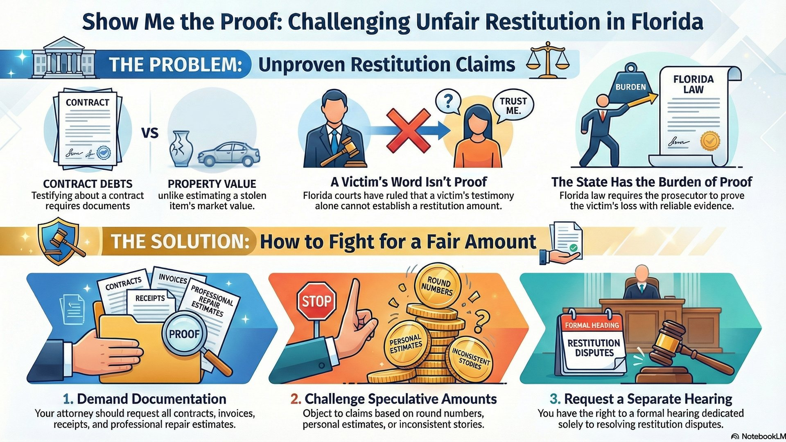
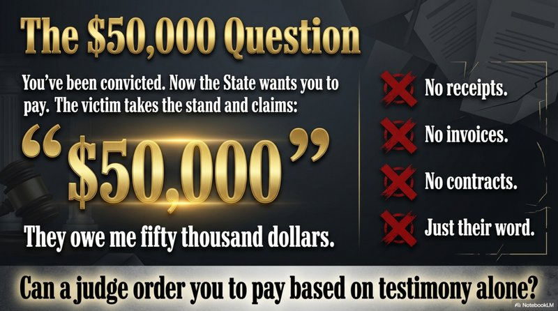
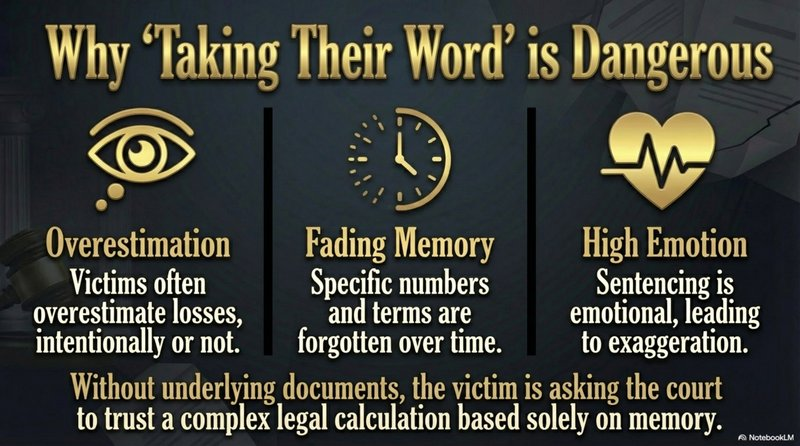

Show Me the Contract: Challenging Inflated Restitution in Florida Criminal Cases

You've already pleaded guilty or been convicted. Now the State wants you to pay the victim back. The victim takes the stand and says, "They owe me $50,000." No receipts. No invoices. No contracts. Just their word. Can a judge order you to pay based on that alone? According to a recent Florida appellate ruling, the answer is no.

The Case: Pope v. State (2025)
In Pope v. State, 50 Fla. L. Weekly D2556a (Fla. 4th DCA 2025), the defendant was convicted in a contracting fraud case. At sentencing, the victim testified about the amounts she claimed she was owed under their contract.
There was just one problem: the actual contract was never entered into evidence. No invoices. No payment records. No bank statements. Just the victim's testimony about what she remembered the amounts to be.
The 4th DCA's Ruling
The court found this insufficient. Self-reported loss claims in a contracting case, unsupported by any documentary evidence, cannot establish the restitution amount. The victim's testimony alone didn't meet Florida's evidentiary standard.
The Restitution Standard: "Substantial Competent Evidence"
Florida Statute 775.089 governs restitution in criminal cases. The statute places the burden squarely on the State.
F.S. 775.089(7)(c) - Burden of Proof
"The burden of demonstrating the amount of the loss sustained by a victim as a result of the offense is on the state attorney."
"Any dispute as to the proper amount or type of restitution shall be resolved by the court by the preponderance of the evidence."
The statute allows hearsay evidence - but only if it has "minimal indicia of reliability." In practice, courts have interpreted this to require substantial competent evidence. D.D. v. State, 172 So. 3d 969 (Fla. 4th DCA 2015).
What does this mean in practice? Florida courts have made clear:
- No speculation allowed - "The amount of restitution must be based on more than speculation." Ritch v. State, 14 So. 3d 1104 (Fla. 1st DCA 2009)
- State bears the burden - The State must prove the loss amount, not the defendant disprove it
- Preponderance standard - More likely than not (51%), but still requires actual evidence

The Critical Distinction: Fair Market Value vs. Contract Claims
Here's where many prosecutors get it wrong. An owner can testify about the fair market value of their property - what their car was worth, what their jewelry would sell for. That's based on personal knowledge of the item.
But contract claims are different. When a victim says "they owed me $50,000 under our agreement," they're not estimating market value. They're making a legal claim about a contractual obligation. That requires proof of:
- What the contract actually said
- What work was performed
- What payments were made
- What remains owed under the terms
Without the underlying documents, the victim is essentially asking the court to take their word for a complex legal calculation. That's speculation, not evidence.
Why This Matters
Victims sometimes overestimate their losses - intentionally or not. Memories fade. Emotions run high. Without documentation, there's no way to verify the claimed amount. Courts shouldn't order defendants to pay unverified claims.

How to Challenge Restitution at Sentencing
If you're facing a restitution hearing, here's what experienced defense attorneys do:
1. Demand Documentation
Before the hearing, request that the State provide:
- Contracts - The actual agreement
- Invoices - Itemized bills
- Receipts - Proof of payment
- Bank records - Transaction history
- Repair estimates - From licensed professionals
2. Challenge Speculative Amounts
Under Glaubius v. State, 688 So. 2d 913 (Fla. 1997), restitution cannot be based on speculation. Challenge amounts that are:
- Round numbers without itemization
- "Estimates" without professional basis
- Claims that changed significantly over time
- Amounts inconsistent with other evidence
3. Request a Restitution Hearing
You have the right to a separate hearing on restitution. Don't let the State tack on a number at the sentencing hearing without proper evidentiary foundation.
Where This Defense Applies
Restitution challenges are most effective in cases involving:
Contractor Fraud
Claims about contract amounts require the actual contract
Theft of Services
Demand time records, pay stubs, or billing records
Property Damage
Estimates without actual repair receipts may be challenged
Financial Crimes
Bank records and forensic accounting, not just victim claims
Why Restitution Defense Matters
Restitution isn't just about money - it can affect your entire sentence. In Florida:
- Probation conditions - Failure to pay can result in violation
- Ability to seal/expunge - Outstanding restitution can block record clearing
- Credit impact - Restitution can become a civil judgment
- Collection - The State can garnish wages and seize assets
An inflated restitution order follows you for years. Fighting for an accurate amount at sentencing protects your future.
Facing a Restitution Hearing in Orlando?
The State must prove restitution amounts with substantial competent evidence, not just victim testimony. If you're concerned about inflated or unsupported restitution claims, talk to a defense attorney before your hearing.
Call 407-500-7000 for a free consultation.
Cases Cited
- Pope v. State, 50 Fla. L. Weekly D2556a (Fla. 4th DCA 2025)
- D.D. v. State, 172 So. 3d 969 (Fla. 4th DCA 2015)
- Ritch v. State, 14 So. 3d 1104 (Fla. 1st DCA 2009)
- Glaubius v. State, 688 So. 2d 913 (Fla. 1997)
Governing Statute: F.S. 775.089(7)(c)
Need Legal Help?
If you're facing criminal charges in Central Florida, an experienced defense attorney can make the difference. Get a free consultation to discuss your case.
Contact Lotter Law at 407-500-7000 for a free consultation.

Jeff Lotter
Criminal Defense Attorney | Former State Trooper
Jeff Lotter is an Orlando criminal defense attorney and former Florida Highway Patrol trooper. He uses his law enforcement background to build stronger defenses for clients facing criminal charges.
Related Articles
Florida Stand Your Ground Law: What You Need to Know
You Got a Ticket - Are You Under Arrest?
Theft Charges & Your Future: Why "Petit" Theft Can End a Graduate Career
Florida's New DUI Refusal Law: Criminal Penalties Start October 2025
Florida's new law makes refusing DUI chemical tests a criminal misdemeanor starting October 1, 2025....